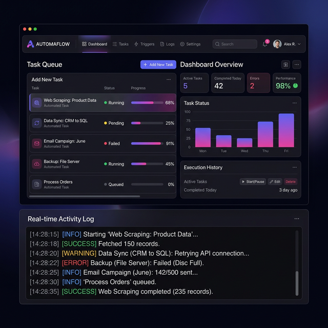
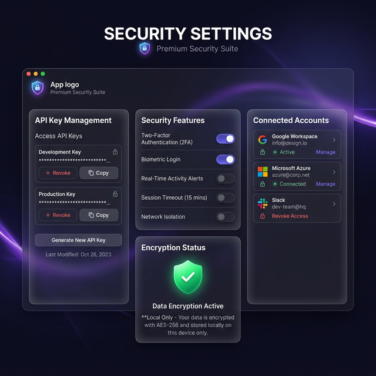

Rakiplerinden ayıran güçlü özelliklerle donatılmış, profesyoneller için tasarlandı.
Yerel masaüstü mimarisi sayesinde sıfır gecikme. Tarayıcı tabanlı araçların aksine, her şey doğrudan bilgisayarınızda çalışır.
API anahtarları, hesap bilgileri ve tüm verileriniz yalnızca sizin cihazınızda şifreli olarak saklanır. Hiçbir sunucuya gönderilmez.
Tekrarlayan görevleri tanımlayın, zamanlayın ve arka planda otomatik çalıştırın. 7/24 kesintisiz çalışma.
Sınırsız hesabı tek panelden yönetin. Her hesap bağımsız çalışır, birbirini etkilemez.
Canlı log akışı, performans grafikleri ve anlık bildirimlerle tüm işlemlerinizi gözlemleyin.
İhtiyacınıza göre genişletilebilir yapı. Yeni modüller ekleyin, mevcut olanları özelleştirin.
Gerçek ekran görüntüleriyle Stainless Max'in sunduğu deneyimi keşfedin.
Hesap istatistikleriniz, aktif görevleriniz ve performans grafikleriniz anlık olarak güncellenir. Sezgisel arayüz sayesinde karmaşık verileri kolayca anlayın.
Görev kuyruğu, ilerleme çubukları ve gerçek zamanlı log akışı ile her otomasyonu detaylıca takip edin. Zamanlayıcılarla 7/24 çalışma imkânı.

API anahtarlarınızı yönetin, güvenlik ayarlarınızı kontrol edin ve tüm bağlantılarınızı tek panelden izleyin. Her şey şifreli, her şey yerel.

Kurulum ve kullanım inanılmaz kolay. Sadece 3 adım.
Tek tıkla kurulum dosyasını indirin. Otomatik WebView2 desteği ile saniyeler içinde hazır.
API anahtarlarınızı girin, hesaplarınızı ekleyin. Sezgisel kurulum sihirbazı sizi yönlendirir.
Görevleri tanımlayın ve çalıştırın. Stainless Max arka planda 7/24 sizin için çalışır.
Ücretsiz indirin, dakikalar içinde kurulumu tamamlayın ve masaüstü otomasyonunun gücünü keşfedin.
Sorularınız, önerileriniz veya destek talepleriniz için aşağıdaki adresi kullanabilirsiniz.